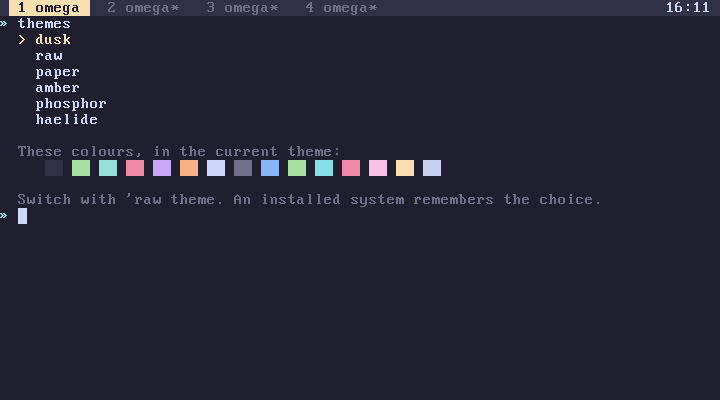
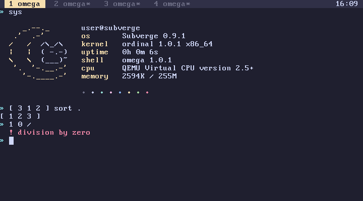
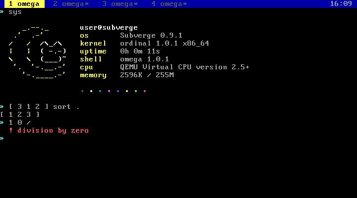
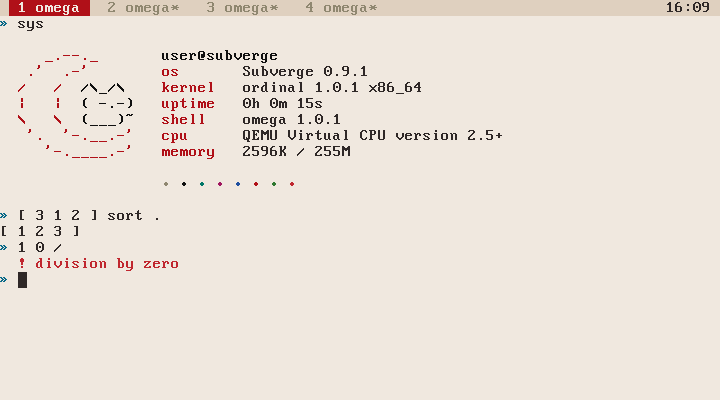
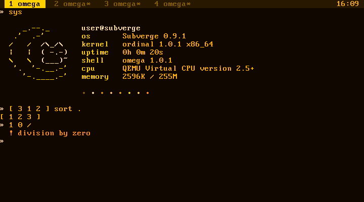
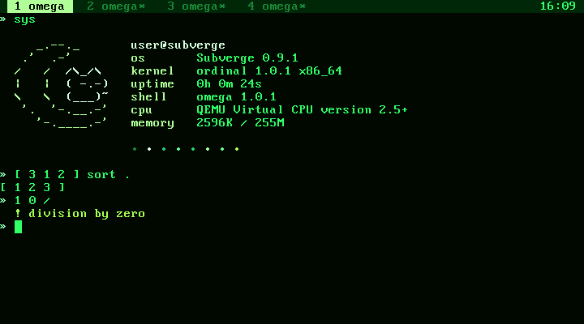
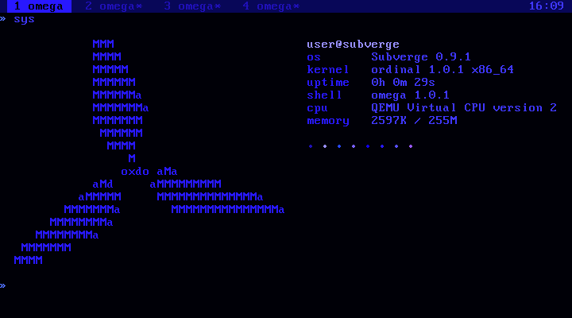
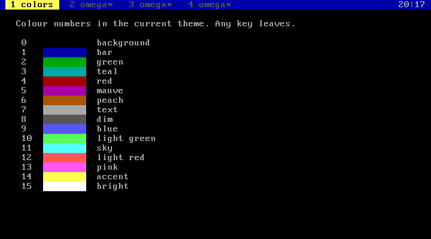

subverge
subvergeThemes
- The themes
- dusk
- raw
- paper
- amber
- phosphor
- haelide
- Colour numbers
- Backgrounds
- Changing one colour
- Saving
- Adding a theme
A theme sets the 16 colours of the text screen and of graphics mode. Programs pick colours by number, 0 to 15, and the theme decides the actual colour behind each number.
themes list the themes, with the current one marked
'raw theme switch to raw
theme@ say print the name of the current theme
Switching changes all four tabs at once, including text that is already on the screen. An installed system writes the choice to disk and uses it at the next boot. The live ISO starts with dusk.

The themes
dusk
dusk is the default.

raw
raw is the standard VGA palette.

paper

amber

phosphor

haelide
haelide also switches the logo that sys draws to the haelide logo. Switching to another theme switches back to the subverge logo, unless you picked a different logo yourself. See logos.

Colour numbers
The numbers follow the VGA order, and every theme keeps what each number is used for:
| Number | VGA name | Used for |
|---|---|---|
| 0 | black | the background |
| 1 | blue | the tab bar, program headers and empty cells |
| 2 | green | |
| 3 | cyan | |
| 4 | red | |
| 5 | magenta | |
| 6 | brown | |
| 7 | light grey | normal text |
| 8 | dark grey | dim text, such as the stack at the prompt and hints |
| 9 | light blue | |
| 10 | light green | success messages, such as installed |
| 11 | light cyan | the » of the prompt, group names in help |
| 12 | light red | errors |
| 13 | light magenta | |
| 14 | yellow | the accent, used for headings, the active tab and the logo |
| 15 | white | bright text |
colors shows the numbers in the current theme:

n color sets the colour of printed text. put and text take an attribute, which is a foreground plus 16 times a background, and attr builds one (screen):
14 color "heading" say 7 color
"warning" 2 5 0 12 attr text
Every theme uses 12 for errors and 14 for the accent, so programs can rely on those two.
Backgrounds
All 16 colours work as backgrounds. VGA text mode normally uses the top bit of the background for blinking, which limits backgrounds to 8 colours. The kernel turns blinking off at boot.
Changing one colour
n r g b rgb
sets colour n to red, green and blue values from 0 to 255:
14 255 120 0 rgb orange accent
0 20 0 30 rgb dark purple background
The change applies to all tabs at once. The VGA palette has 6 bits per channel, so values are rounded down to a multiple of 4. rgb isn't saved, and the next theme or reboot resets it. To keep a custom palette, add the rgb lines to startup with 'startup open.
Saving
The theme is stored as a number in the state header on the disk (disk layout). Switching writes only that sector. install copies the current theme to the new drive.
Adding a theme
The themes are a table in kernel/vga.c. Each entry has a name and 16 RGB values. Add an entry and rebuild (development). If a word named logo- followed by the theme's name exists, switching to the theme also switches to that logo. Installed disks store a theme by its position in the table, so add new ones at the end.